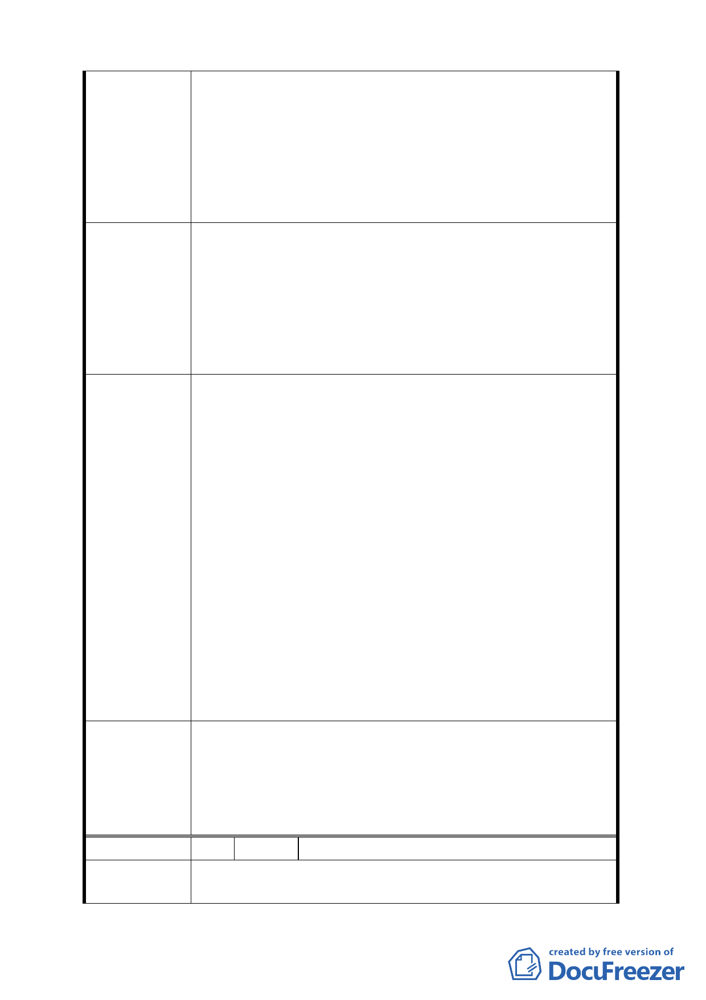

原則。
二、 在本都市計畫書科技工業區土地佔本都市計畫約
36.77%，惟商業區土地僅規劃 0.67%，其餘公共設施
用地亦佔本都市計畫 44.82%，而且都市計畫是以人
的需求而劃分分區使用，且台灣省都市計畫法關於工
業區亦放寬對於一般性商業設施即事務所及一般零
售業等的使用限制。
一、 建議將南段科技工業區（供倉儲使用）比照增加第
40 組農產品批發業。
二、 建議相當於台灣省工業區屬性科技工業區除比照第
建議辦法
三種工業區之外應可額外放寬第 19、27、49 組別，
以符合現況的需求。
三、 為使本區段容積率能充分使用建請 G1~G10 區塊應保
留原規劃之高度以不超 30 公尺為原則。
一、經查羊稠小段地區之辦公服務區（二）（原倉儲專業
區），依據 90 年 9 月 14 日公告計畫案及 93 年 4 月 22
日公告修訂計畫案，其規劃原意係為建構多功能工商
服務之特定專用區，並已明訂允許使用項目。故與大
彎南段地區「科技工業區（供倉儲使用）」（即原工業
區（供倉儲使用））之工業區性質並不完全相同。又依
本市土地使用分區管制規則第五條土地及建築物使用
發展局回應
組別之使用項目「第 40 組：農產品批發業」係指「果
菜批發業、家畜（肉品）家禽、魚產批發市場等」，屬
批發市場性質，尚不宜於本地區設置，且本計畫區目
前已允許第 38 組：倉儲業及第 39 組：一般批發業使
用，建議陳情人改以上開組別申設。
二、另查本案業已於都市設計管制中，基於維護整體環境
景觀，修訂 G1～G10 街廓建築物高度規定，由原計畫
「以不超過 24 公尺為原則」，修訂放寬為「高度不得
超過 30 公尺」。
一、案內附件一表 1-1 土地及建築物使用組別容許表第
委員會決議
40 組「農產品批發業」增列允許第 1 目「果菜批發
業」。
二、餘依依市府（發展局）回應內容辦理。
編 號 5 陳情人 王慈彬
陳
情
理
由 一、
本人居住於內湖區多年，對於 貴府近年來因應產業
變化快速之需求，將原內湖輕工業區變更為符合世界
9